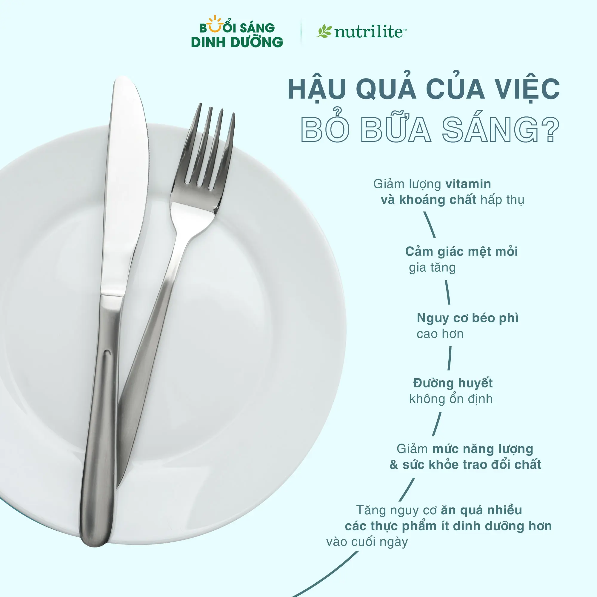

Hậu Quả Của Việc Bỏ Bữa Sáng?
Ăn một bữa sáng lành mạnh có thể giúp bạn tránh bị kiệt sức vào cuối ngày bằng cách cung cấp chất dinh dưỡng cho cơ thể, tăng cường quá trình trao đổi chất và cung cấp năng lượng mà cơ thể bạn cần để bắt đầu ngày mới.
Gần 3/4 số người bỏ bữa sáng không đáp ứng được 2/3 lượng vitamin và khoáng chất được khuyến nghị. Thêm vào đó, bỏ bữa sáng có liên quan đến nguy cơ béo phì cao hơn.
Những hậu quả trên có khiến bạn muốn ăn một bữa sáng đầy đủ chưa? Hãy tìm hiểu thêm hậu quả của việc bỏ bữa sáng là gì, để có thể chăm chút hơn vào bữa ăn đầu tiên của ngày nhé!
Nguồn:
- Reutrakul S, Hood MM, Crowley SJ, et al. The relationship between breakfast skipping, chronotype, and glycemic control in type 2 diabetes. Chronobiol Int. 2014; 31: 64-71.
- Watanabe Y, Saito I, Henmi I, et al. Skipping breakfast is correlated with obesity. J Rural Med. 2014; 9: 51-58
- Deshmukh-Taskar P, Nicklas TA, Radcliffe JD, et al. The relationship between breakfast skipping and type of breakfast consumed with overweight/obesity, abdominal obesity, other cardiometabolic risk factors and the metabolic syndrome in young adults: NHANES 1999-2006. Publ Health Nutr. 2013; 16: 2073-2082.
